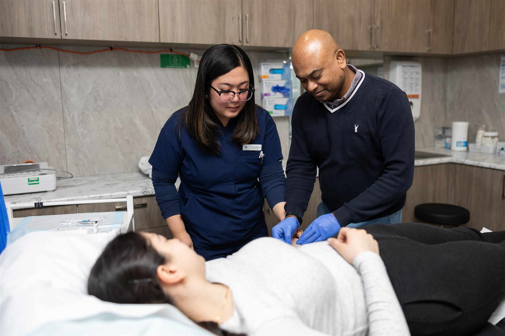

Do medicine the way you always wanted to
We're a close-knit family practice on Whitehorse Road, and we're always glad to meet experienced GPs who'd like to be part of it.

Small team, first names, long relationships
Balwyn Central is the kind of practice where everyone knows each other, and where our doctors know their patients by name because they've cared for the same families year after year. Continuity isn't a slogan here. It's just how the place works.
Our GP directors are practising doctors in these rooms, not distant owners. They consult in the same corridors, share the same tea room, and make decisions as people who know exactly what the work feels like. When something needs fixing, you talk to a colleague, not a head office.
It's a supportive, non-hierarchical place. People look out for each other, cover for each other, and enjoy each other's company. If that sounds like the medicine you've been wanting to get back to, we'd love to meet you.

Your energy goes where it should
The things that make a working week feel good, sorted.
Do medicine, not admin
An experienced nursing team prepares care plans, a hands-on practice manager keeps the wheels turning, and modern software stays out of your way. Your time goes to patients.
Real flexibility
Choose your own sessions and days, and shape a week that fits your life. Weekends are there if you want them, never forced on you.
Fair, transparent earnings
We keep remuneration simple and fair, and we're happy to walk you through exactly how it works when we chat. No surprises, no fine print.
Stability and support
The calm of a well-run practice: reliable rooms, steady systems, and colleagues who have your back on the hard days as well as the good ones.

A proper general practice, done properly
We care for families across Balwyn and the eastern suburbs: everyday general practice alongside skin cancer medicine, women's health, chronic disease care, minor procedures, health assessments and antenatal shared care. Registered nurses are on site whenever we're open, and pharmacy and pathology are in the same building.
You'd be joining a team of experienced GPs and registrars across two comfortable Whitehorse Road sites, with private consulting rooms and well-equipped treatment rooms. Our second site at 411 is separately accredited in its own right, which says something about how we like to run things: properly, and without shortcuts.
[To be confirmed: any specific services or facilities to highlight]
The warmth of a family practice, with real support behind it
Day to day, this is a local, personal practice. Behind the scenes, being part of ICO Health Group gives us dependable systems, nursing and admin support, so there's less on your plate and more back-up when you need it, without losing the feel of the place. For the wider picture, visit the ICO Health work with us hub (opens in a new tab).
No recruiters, no pressure
Nothing to prepare. Just a relaxed, confidential conversation with people who do the same job you do. We're happy to walk through everything, including remuneration and the sessions currently available, when we speak.

Tell us a little about yourself
Share your details and [To be confirmed: contact person] will be in touch for a friendly, confidential chat.
[To be confirmed: sessions currently available]
This is a prototype form. Enquiries will be sent to [To be confirmed: our email/tracker] once connected. Everything you share stays confidential.